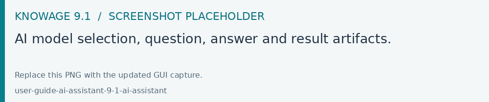

AI assistant
The AI assistant is available in Enterprise Edition when the AI service is configured and your account has permission to use it. Open the assistant from the main menu.
Choose one of the business models available in the model selector.
Wait for the session to connect, then enter a question about that model.
Read the answer and use the supplied document links or result artifacts where available.
Refine the question with the period, measure, grouping or comparison you need.
For example, ask for sales by region for a specified year, then ask which regions contributed most to the change from the previous year. Choose a model covering those business concepts.
Review the returned filters, units and figures before reusing an answer in a report. The available models and outputs depend on the configured AI service.
Use the conversation controls to start a new conversation, inspect available history or open the artifact panel. Changing the business model can require confirmation before the current conversation is replaced. Minimize the panel to return to your analysis and reopen it when needed.

Fig. 8 AI model selection, question, answer and result artifacts.
If the assistant cannot connect, use the retry action and ask the administrator to check the AI service. If the model list is empty, the administrator must configure and synchronize the models available for AI use.